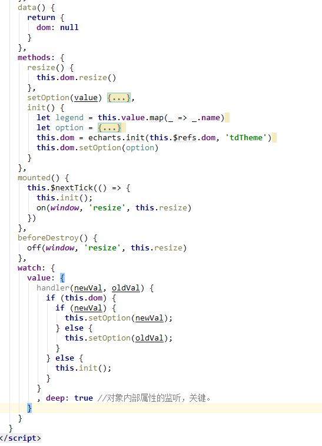

在vue使用echarts时，可能会遇到这样的问题，就是直接刷新浏览器，或者数据变化时，echarts不更新?
这是因为Echarts是数据驱动的，这意味着只要我们重新设置数据，那么图表就会随之重新渲染，这是实现本需求的基础。我们再设想一下，
如果想要支持数据的自动刷新，必然需要一个监听器能够实时监听到数据的变化然后告知Echarts重新设置数据。
所幸Vue为我们提供了==watcher==功能，通过它我们可以很方便的实现上述功能：
watch:{
option:function(newvalue,oldvalue){
//侦听相对应的属性
//判断echarts对象是否存在存在 if(charts),charts为定义的echarts对象,
//若存咋， 则继续判断属性是否发生变化 if(newvalue)，发生变化重新设置echarts的option, charts.setOption(newvalue),没发生变化则 charts.setOption(loldvalue)
//若charts对象不存在，则直接初始化echarts
}
}
